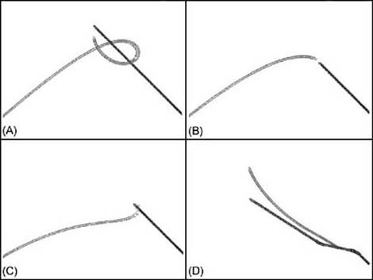

|
|
< Day Day Up > |
|
5.2 Chasing/EvadingTo show how to implement potential-based chasing (or evading), we need only add a few bits of code to AIDemo2-2 (see Chapter 2 for more details). In that example program, we simulated the predator and prey units in a continuous environment. The function UpdateSimulation was responsible for handling user interaction and for updating the units every step through the game loop. We're going to add two lines to that function, as shown in Example 5-1.
Example 5-1. Chase/evade demo UpdateSimulation
void UpdateSimulation(void)
{
double dt = _TIMESTEP;
RECT r;
// User controls Craft1:
Craft1.SetThrusters(false, false);
if (IsKeyDown(VK_UP))
Craft1.ModulateThrust(true);
if (IsKeyDown(VK_DOWN))
Craft1.ModulateThrust(false);
if (IsKeyDown(VK_RIGHT))
Craft1.SetThrusters(true, false);
if (IsKeyDown(VK_LEFT))
Craft1.SetThrusters(false, true);
// Do Craft2 AI:
.
.
.
if(PotentialChase)
DoAttractCraft2();
// Update each craft's position:
Craft1.UpdateBodyEuler(dt);
Craft2.UpdateBodyEuler(dt);
// Update the screen:
.
.
.
}
As you can see, we added a check to see if the PotentialChase flag is set to true. If it is, we execute the AI for Craft2, the computer-controlled unit, which now uses the potential function. DoAttractCraft2 handles this for us. Basically, all it does is use the potential function to calculate the force of attraction (or repulsion) between the two units, applying the result as a steering force to the computer-controlled unit. Example 5-2 shows DoAttractCraft2. Example 5-2. DoAttractCraft2
// Apply Lenard-Jones potential force to Craft2
void DoAttractCraft2(void)
{
Vector r = Craft2.vPosition - Craft1.vPosition;
Vector u = r;
u.Normalize();
double U, A, B, n, m, d;
A = 2000;
B = 4000;
n = 2;
m = 3;
d = r.Magnitude()/Craft2.fLength;
U = -A/pow(d, n) + B/pow(d, m);
Craft2.Fa = VRotate2D( -Craft2.fOrientation, U * u);
Craft2.Pa.x = 0;
Craft2.Pa.y = Craft2.fLength / 2;
Target = Craft1.vPosition;
}
The code within this function is a fairly straightforward implementation of the Lenard-Jones function. Upon entry, the function first calculates the displacement vector between Craft1 and Craft2. It does this by simply taking the vector difference between their respective positions. The result is stored in the vector r and a copy is placed in the vector u for use later. Note that u also is normalized. Next, several local variables are declared corresponding to each parameter in the Lenard-Jones function. The variable names shown here directly correspond to the parameters we discussed earlier. The only new parameter is d. d represents the separation distance, r, divided by the unit's length. This yields a separation distance in terms of unit lengths rather than position units. This is done for scaling purposes, as we discussed in Chapter 4. Aside from dividing r by d, all the other parameters are hardcoded with some constant values. You don't have to do it like this, of course; you could read those values in from some file or other source. We did it this way for clarity. As far as the actual numbers go, they were determined by tuning—i.e., they all were adjusted by trial and error until the desired results were achieved. The line that reads U = -A/pow(d, n) + B/pow(d, m); actually calculates the steering force that will be applied to the computer-controlled unit. We used the symbol U here, but keep in mind that what we really are calculating is a force. Also, notice that U is a scalar quantity that will be either negative or positive, depending on whether the force is an attractive or repulsive force. To get the force vector, we multiply it by u, which is a unit vector along the line of action connecting the two units. The result is then rotated to a local coordinate system connected to Craft2 so that it can be used as a steering force. This steering force is applied to the front end of Craft2 to steer it toward or away from the target, Craft1. That's all there is to it. Upon running this modified version of the chase program, we can see that the computer-controlled unit does indeed chase or evade the player unit depending on the parameters we've defined. Figure 5-2 shows some of the results we generated while tuning the parameters. Figure 5-2. Potential chase and evadeIn Figure 5-2 (A), the predator heads toward the prey and then loops around as the prey passes him by. When the predator gets too close, it turns abruptly to maintain some separation between the two units. In Figure 5-2 (B), we reduced the strength of the attraction component (we reduced parameter A somewhat), which yielded behavior resembling the interception algorithm we discussed in Chapter 2. In Figure 5-2 (C), we increased the strength of attraction and the result resembles the basic line-of-sight algorithm. Finally, in Figure 5-2 (D), we reduced the attraction force, increased the repulsion force, and adjusted the exponent parameters. This resulted in the computer-controlled unit running from the player. Adjusting the parameters gives you a great deal of flexibility when tuning the behavior of your computer-controlled units. Further, you need not use the same parameters for each unit. You can give different parameter settings to different units to lend some variety to their behavior—to give each unit its own personality, so to speak. You can take this a step further by combining this potential function approach with one of the other chase algorithms we discussed in Chapter 2. If you play around with AIDemo2-2, you'll notice that the menu selections for Potential Chase and the other chase algorithms are not mutually exclusive. This means you could turn on Potential Chase and Basic Chase at the same time. The results are very interesting. The predator relentlessly chases the prey as expected, but when it gets within a certain radius of the prey, it holds that separation—i.e., it keeps its distance. The predator sort of hovers around the prey, constantly pointing toward the prey. If the prey were to turn and head toward the predator, the predator would turn and run until the prey stops, in which case the predator would resume shadowing the prey. In a game, you could use this behavior to control alien spacecraft as they pursue and shadow the player's jet or spacecraft. You also could use such an algorithm to create a wolf or lion that stalks its victim, keeping a safe distance until just the right moment. You even could use such behavior to have a defensive player cover a receiver in a football game. Your imagination is the only limit here, and this example serves to illustrate the power of combining different algorithms to add variety and, hopefully, to yield some sort of emergent behavior. |
|
|
< Day Day Up > |
|